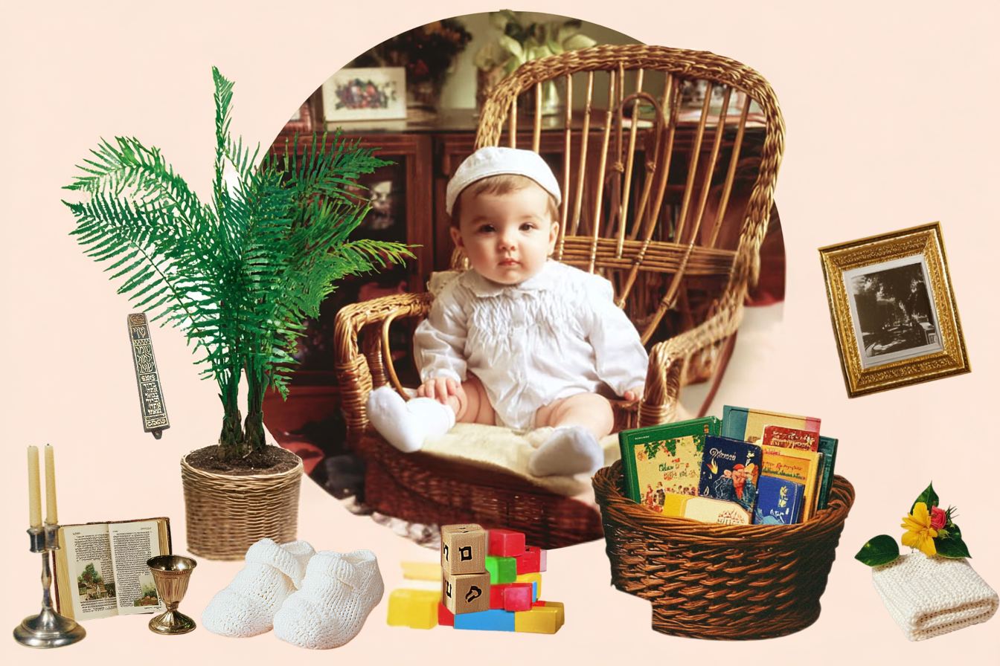

The
Jewish
Nursery
Everything a new Jewish parent needs to know — from the pregnancy test to your baby's first Shabbat. Click the itemsScroll down to explore each topic.

What's Next
Jewish Home
Bris & Baby Naming
Shopping for Baby
Picking a Name
Jewish Books
Jewish Grandparents
Jewish Pregnancy
Explore each topic
Jewish Pregnancy
Ayin hara, genetic testing, doulas & birth traditions
→
Bris & Baby Naming
Brit milah, baby naming ceremonies & how to find a mohel
→
Picking a Name
Hebrew names, honoring loved ones & family tradition
→
Shopping for Baby
Gift guides, mezuzahs & Jewish registry essentials
→
Jewish Grandparents
Bubbe, Saba, Savta & the stories only they can tell
→
Jewish Books
The best Jewish board books to start your baby's shelf
→
Creating a Jewish Home
Mezuzahs, Shabbat rituals & making your home feel Jewish
→
What's Next
First holidays, Jewish education & finding your village
→